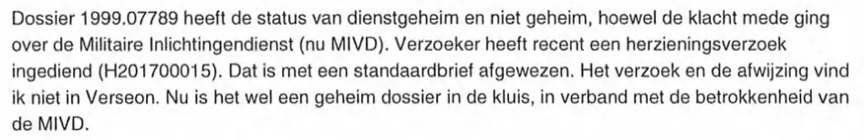
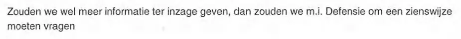

Bewijsstuk · Notitie
Nationale ombudsman over het dossier Giltay, 18 mei 2017
De stemmensectie haalt uit deze notitie twee uitspraken aan: dat het dossier een geheim dossier in de kluis is, en dat Defensie om een zienswijze zou moeten worden gevraagd voordat er meer ter inzage werd gegeven. Beide passages staan hieronder in de volgorde van de notitie.
Een geheim dossier in de kluis
“Dossier 1999.07789 heeft de status van dienstgeheim en niet geheim, hoewel de klacht mede ging over de Militaire Inlichtingendienst (nu MIVD). Verzoeker heeft recent een herzieningsverzoek ingediend (H201700015). Dat is met een standaardbrief afgewezen. Het verzoek en de afwijzing vind ik niet in Verseon. Nu is het wel een geheim dossier in de kluis, in verband met de betrokkenheid van de MIVD.” Pagina 1, de alinea die begint met ‘Dossier 1999.07789 heeft de status’. Verseon is het digitale systeem waarin het bureau van de ombudsman zijn post, zaken en dossiers registreert.

Defensie zou om een zienswijze moeten worden gevraagd
“Zouden we wel meer informatie ter inzage geven, dan zouden we m.i. Defensie om een zienswijze moeten vragen” Pagina 2, de alinea die begint met ‘Zouden we wel meer informatie’. De zin heeft in de notitie geen punt.

Waarom dit document telt
In deze interne notitie van 18 mei 2017 schrijft een medewerker van de Nationale ombudsman dat Giltays dossier formeel dienstgeheim is, maar toch als “geheim dossier in de kluis” ligt, “in verband met de betrokkenheid van de MIVD”. Het essay stelt dat de ombudsman het letterlijk “in de kluis” had opgeborgen. Ook Giltays herzieningsverzoek van januari 2017 en de afwijzing daarvan vindt de medewerker niet terug in Verseon, het registratiesysteem van het bureau. Dezelfde notitie weegt af of er meer van het dossier mag worden getoond, en de medewerker meent dat dan eerst het Ministerie van Defensie om een zienswijze zou moeten worden gevraagd.
Herkomst
- Document
- Interne notitie
- Van
- Een behandelaar bij het bureau van de ombudsman, naam in het document weggelakt
- Aan
- Een collega bij hetzelfde bureau, alleen met initialen aangeduid
- Dossier
- 1999.07789, op naam van E.F. Giltay
- Datum
- 18 mei 2017
- Onderwerp
- Verzoek om inzage
- Verwijzingen
- Openbaar rapport 99/507; herzieningsverzoek H201700015 (Giltays brief van 30 januari 2017 met het verzoek om dat rapport in te trekken, op 7 maart 2017 afgewezen); ECLI:NL:RBDHA:2015:15050; ECLI:NL:GHDHA:2016:870
- Markering
- DOC 27, gestempeld op pagina 1
- Taal
- Nederlands
- Pagina’s
- 2
- Berust bij
- Nationale ombudsman
Aangehaald in:
- het essay ‘Het verbod viel, het boek bleef overeind’ in het hoofdstuk (9) ‘Voorgoed vastgelegd’
- de stemmensectie.
Document: https://
Laatst gewijzigd 13 september 2026, geraadpleegd 3 oktober 2026.

Deze pagina is een bewijsstuk bij het boek De doofpotgeneraal van Edwin Giltay en de bijbehorende website.